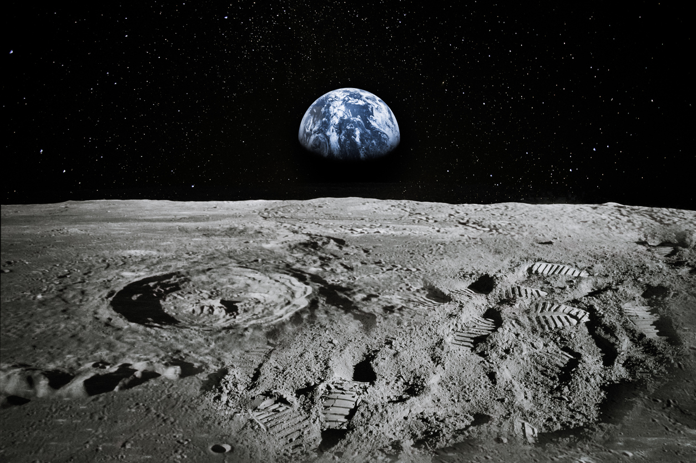

About Space Expeditions
Humanity has always been fascinated by the stars. From the first moon landing to the exploration of Mars, each mission has brought us closer to understanding our universe. Today, missions continue to push boundaries, using advanced technology to reach farther into the cosmos than ever before.
Since the launch of the first man-made satellite mission in 1957, humanity has made incredible leaps in space exploration. From the first spacewalks to landing on the Moon, sending robots to Mars and observing distant galaxies, space missions have expanded our understanding of the universe.
Today, exploration continues, and with each new step, astronauts and scientists are discovering uncharted territory. Ongoing missions, such as sending humans to Mars and exploring Jupiter's icy satellites, inspire hope for even deeper discoveries.
Ongoing research includes studying the possibility of life on other planets, the nature of black holes, and the potential for human life beyond Earth. Each discovery helps us understand more about the universe and our place within it.
Join us on a journey through space and time as we continue to uncover the mysteries of our universe!
